Kakteen und andere Sukkulenten

Adromischus
Adromischus cooperi
Pflegehinweise & Notizen:
Steht bevorzugt warm. Sommerquartier: Küchenfenster, Winterquartier: Treppenhaus. Substrat: Uhlig Kakteenerde Standard ggf. gemischt mit COMPO CACTEA® und rein mineralischem Substrat 1:1:1 (Düngen nach 8 Wochen).
- 27.04.25: Kulturhinweise aktualisiert
- 08.10.24: Vom Süd- zum Nordfenster gestellt
- 13.05.25: Ans Südfenster gestellt
- 01.06.25: Ans Küchenfenster?
- 01.03.26: Vertrocknet

Aloe
Aloe vera
Pflegehinweise & Notizen:
Steckling von Mama aus Australien mitgebracht. Substrat: Uhlig Kakteenerde Standard pur oder Uhlig Mix Erde + COMPO CACTEA® 1:1.
- 22.05.25: Von Bärbel erhalten
- 22.06.25: Umtopfen
- 26.06.25: Angießen
- 20.09.25: Sieht schon wieder so schlecht aus 😕
- 08.11.25: Vertrocknet ☹️

○ Astrophytum
A. asterias
Pflegehinweise & Notizen:
Keine spezifischen Pflegehinweise hinterlegt.

Brutblatt
Kalanchoe daigremontiana
Pflegehinweise & Notizen:
Sommerfrische auf dem Balkon. Substrat: Uhlig Kakteenerde Standard oder gemischt mit COMPO CACTEA® und rein mineralischem Substrat 1:1:1 (Düngen nach 8 Wochen).
- 15.04.25: Sommerfrische Balkon
- 24.05.25: Umtopfen in 10 cm Topf mit Gemisch
- 29.05.25: Gießen
- 29.09.25: Ende Sommerfrische
- 28.05.26: Ans Westfenster gestellt

Brutblatt 2
Kalanchoe daigremontiana
Pflegehinweise & Notizen:
Aus Vereinzelung gezogen. Sommerquartier: Balkon, Winterquartier: Treppenhaus. Substrat: Uhlig Kakteenerde Standard oder gemischt mit COMPO CACTEA® und rein mineralischem Substrat 1:1:1 (Düngen nach 8 Wochen).
- 24.05.25: Aus Vereinzelung, 10 cm Topf, Gemisch
- 29.05.25: Gießen
- 29.09.25: Ende Sommerfrische
- 01.03.26: Blüte im Winterquartier
- 28.05.26: Ans Westfenster gestellt

Brutblatt Gruppe
Kalanchoe daigremontiana
Pflegehinweise & Notizen:
Drei Exemplare. Sommerfrische auf dem Balkon. Substrat: Uhlig Kakteenerde Standard oder gemischt mit COMPO CACTEA® und rein mineralischem Substrat 1:1:1 (Düngen nach 8 Wochen).
- 05.10.24: Drei Exemplare dokumentiert
- 15.04.25: Sommerfrische Balkon
- 13.06.25: Umtopfen
- 21.06.25: Foto gemacht
- 26.09.26: Am Nordfenster platziert
- 26.05.26: Auf den Balkon gestellt

Brutblatt Solitär
Kalanchoe daigremontiana
Pflegehinweise & Notizen:
Sommerfrische auf dem Balkon. Substrat: Uhlig Kakteenerde Standard oder gemischt mit COMPO CACTEA® und rein mineralischem Substrat 1:1:1 (Düngen nach 8 Wochen).
- 07.11.24: Von Südfenster zum Nordfenster gestellt, schießt etwas
- 15.04.25: Sommerfrische Balkon
- 14.09.25: Umtopfen und rein ins Zimmer am Nordfenster stellen
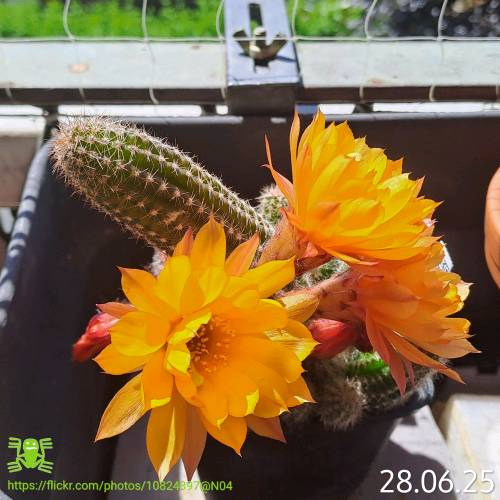
Chamaecereus
Echinopsis Chamaecereus cv. Daniel Orange
Pflegehinweise & Notizen:
Blütezeit im Juni. Frosthart bis -10°C. Substrat: Uhlig Kakteenerde Standard (Düngen nach 8 Wochen).
- 10.05.25: Knospenbildung
- 16.06.25: Blüte geöffnet

Chinesischer Geldbaum
Pilea peperomioides
Pflegehinweise & Notizen:
Erhalten von Marion Beringer.

○ Coryphantha elephantiedens
Pflegehinweise & Notizen:
Keine spezifischen Pflegehinweise hinterlegt.
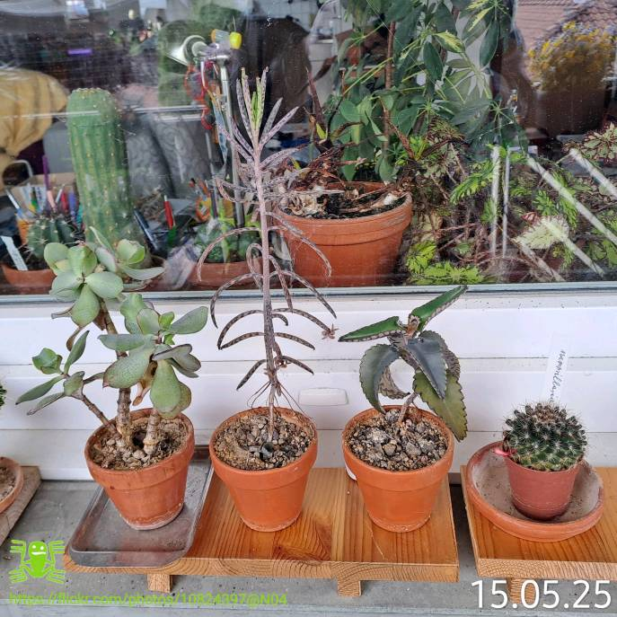
Crassula
Crassula spec.
Pflegehinweise & Notizen:
Sommerfrische auf dem Balkon.
- 10.05.25: Sommerfrische Balkon
- 29.09.25: Ans Westfenster gestellt
- 28.05.26: Ans Westfenster gestellt
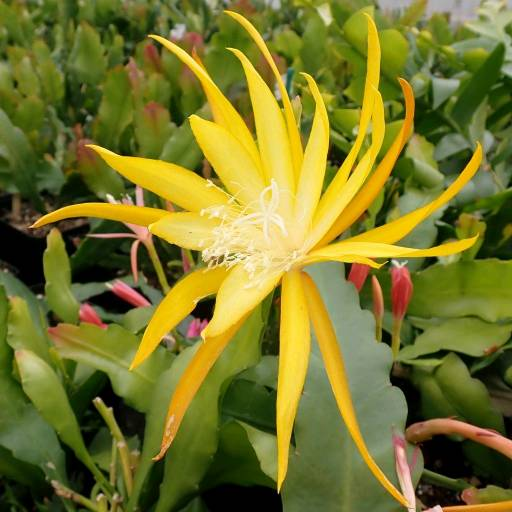
Disophyllum
Disophyllum-Hybr. 'Frühlingsgold' PE 131
Pflegehinweise & Notizen:
Klassischer "Blattkaktus". Angekommen von Uhlig Kakteen. Substrat: Uhlig Epi Erde pur oder gemischt mit COMPO CACTEA® im Verhältnis 2:1 (Epi Erde : COMPO CACTEA®). Düngen nach 6 Wochen.
- 10.05.25: Bestellt bei Uhlig
- 17.05.25: Geliefert und angekommen
- 12.07.25: Umtopfen
- 23.07.25: Düngen
- 23.07.25: Angießen

○ Echeveria elegans
Pflegehinweise & Notizen:
Keine spezifischen Pflegehinweise hinterlegt.
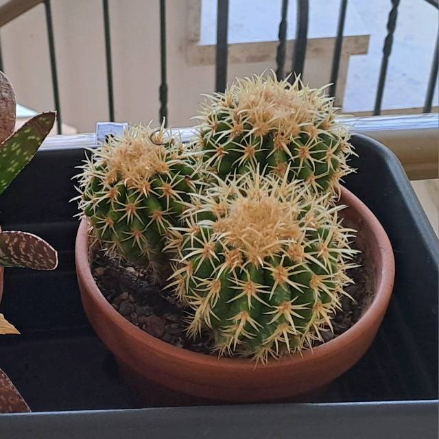
Echinocactus
Echinocactus grusonii?
Pflegehinweise & Notizen:
Erhalten von Vera. Sommerfrische auf dem Balkon. Substrat: Uhlig Kakteenerde Standard ggf. gemischt mit COMPO CACTEA® und rein mineralischem Substrat 1:1:1 (Düngen nach 8 Wochen).
- 30.04.25: Sommerfrische Balkon
- 27.09.25: Ende Sommerfrische
- 27.05.26: Auf den Balkon gestellt
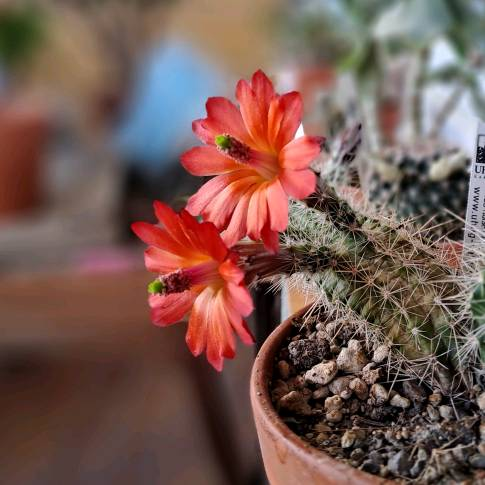
Echinocereus klapperi
Echinocereus klapperi
Pflegehinweise & Notizen:
Möglicherweise frosthart bis -10°C? Herkunft: Uhlig Kakteen. Haltung im Balkon-Blumenkasten. Substrat: Uhlig Mix Erde oder Kakteenerde Standard gemischt mit COMPO CACTEA® und rein mineralischem Substrat 1:1:1 (Düngen nach 8 Wochen).
- 20.05.25: Umtopfen
- 24.05.25: In den Blumenkasten gepflanzt
- 13.06.25: Etwas Sonnenbrand (?), auf Balkon-Fensterbank umgestellt
- 28.06.25: Blütenansatz gesichtet
- 20.07.25: Erste Blüte geöffnet
- 23.07.25: Düngen
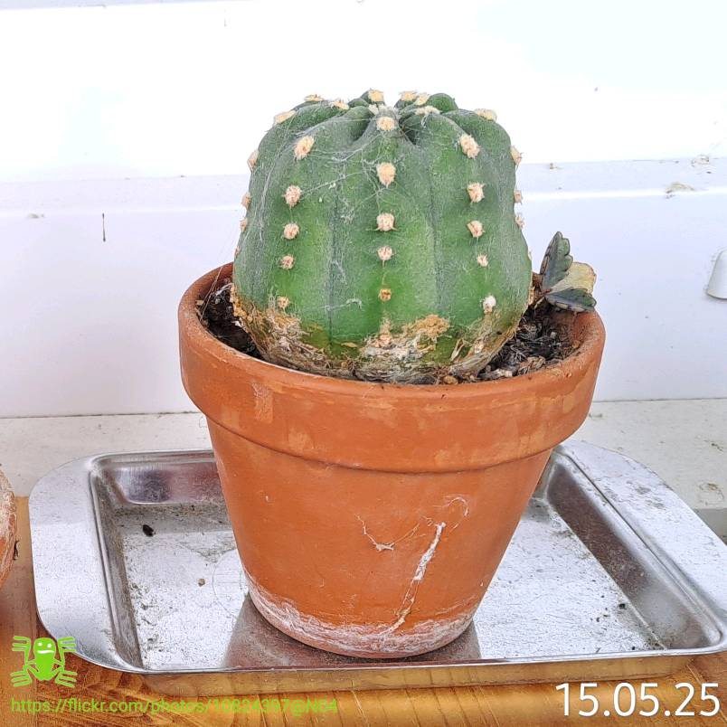
Echinopsis Jungpflanze
Echinopsis?
Pflegehinweise & Notizen:
Aus Vereinzelung der großen Echinopsis gezogen. Sommerfrische auf dem Balkon, Winterquartier im Treppenhaus.
- 27.04.25: Sommerfrische Balkon
- 20.09.25: Scheint Knospen zu bilden
- 30.09.25: Ins Treppenhaus geräumt
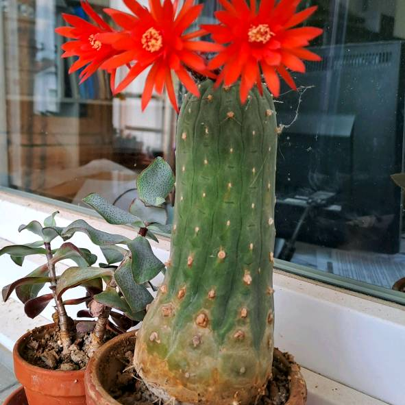
Echinopsis Orange
Echinopsis-Hybride?
Pflegehinweise & Notizen:
Ganzjährig am Südfenster. Jugendform wächst kugelig.
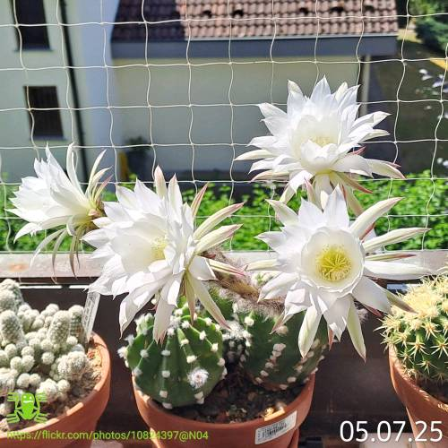
Echinopsis Weiß
Echinopsis?
Pflegehinweise & Notizen:
Erhalten von Vera. Sommerfrische auf dem Balkon.
- 05.10.24: Blütenbildung dokumentiert
- 13.04.25: Sommerfrische Balkon
- 27.05.25: Möglicherweise neuer Blütenansatz
- 03.06.25: Blütenansatz deutlich sichtbar
- 28.06.25: Blüte geöffnet
- 27.09.25: Ende Sommerfrische
- 27.05.26: Auf den Balkon gestellt
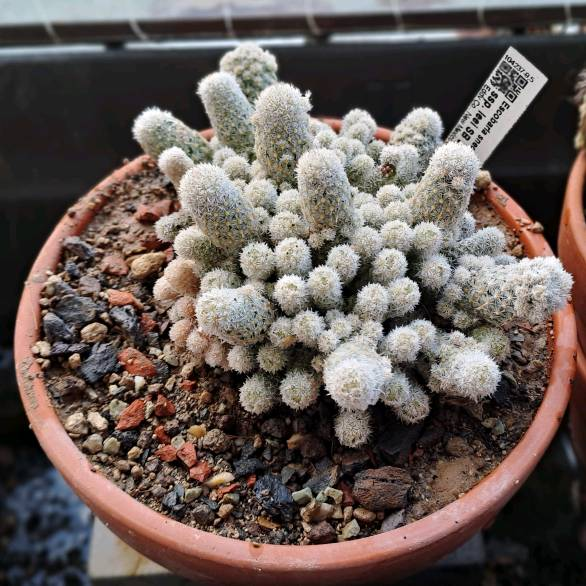
Escobaria sneedii
Escobaria sneedii ssp. leei
Pflegehinweise & Notizen:
Frosthart bis -10°C. Im Blumenkasten platziert. Substrat: Uhlig Mix Substrat (Nachdüngen nach 8 Wochen erforderlich).
- 20.05.25: Umtopfen
- 24.05.25: In den Blumenkasten gesetzt
- 29.06.25: Möglicherweise Blütenansatz gesichtet
- 23.07.25: Gedüngt
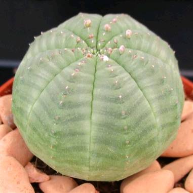
Euphorbia obesa
Euphorbia obesa
Pflegehinweise & Notizen:
Herkunft von astrophytumland.com. Standplatz ganzjährig am Südfenster. Pflanzen lagen nach Ankunft kurz offen. Substrat: Uhlig Mix-Erde.
- 23.05.25: Bestellt
- 28.05.25: Versendet
- 02.06.25: Angekommen
- 05.06.25: Eintopfen
- 08.06.25: Angießen
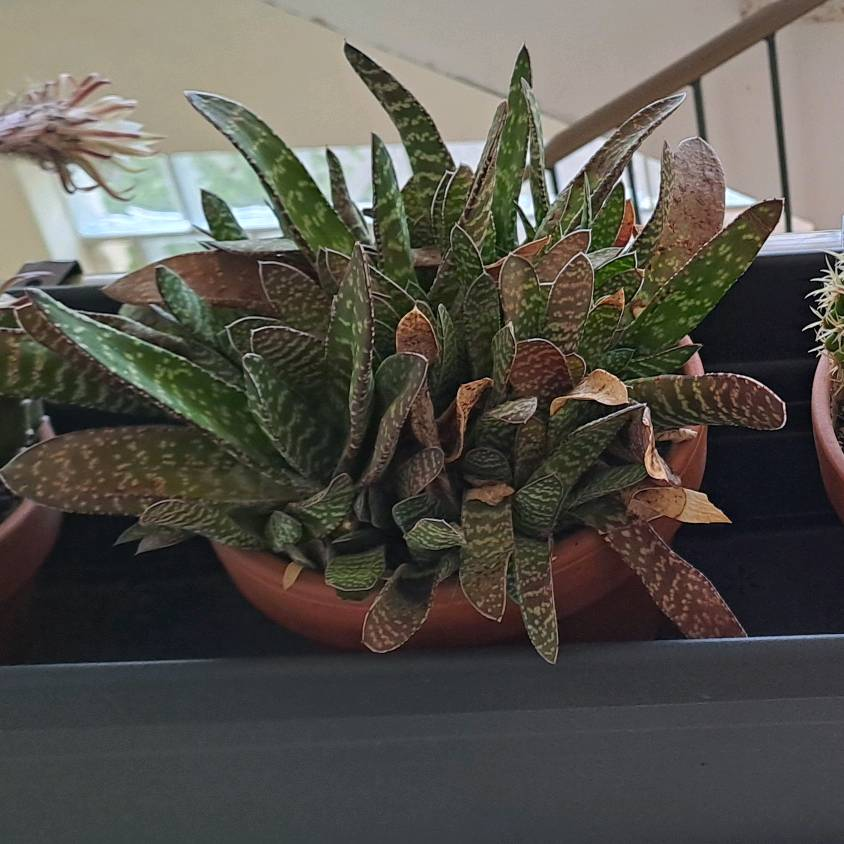
Gasteria
Gasteria verrucosa ?
Pflegehinweise & Notizen:
Erhalten von Vera. Wächst primär im Winter; benötigt dann je nach Temperatur alle 2 bis 4 Wochen ausreichend Wasser. Bei Überwinterung auf Zimmertemperatur wöchentlich gießen. Sommerquartier: Laubengang oder Nordfenster, Winterquartier: Treppenhaus oder Nordfenster. Vermehrung über getrocknete Blattstücke möglich. Substrat: Uhlig Kakteenerde Standard oder gemischt mit COMPO CACTEA® und rein mineralischem Substrat 1:1:1 (Düngen nach 8 Wochen).
- 13.04.25: Sommerfrische Balkon
- 27.04.25: Sieht schlecht aus, vertrocknet?
- 18.05.25: Blütenansatz gesichtet
- 25.05.25: Auf den Laubengang gestellt
- 27.09.25: Ins Treppenhaus geräumt
- 26.05.26: Auf den Laubengang gestellt
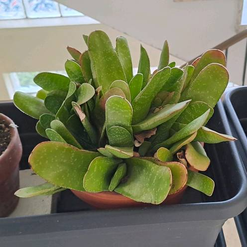
Gasteria
Gasteria bicolor ?
Pflegehinweise & Notizen:
Erhalten von Vera. Wächst im Winter und benötigt je nach Temperatur alle 2 bis 4 Wochen Wasser. Bei Überwinterung im warmen Zimmer wöchentlich gießen. Sommerquartier: Laubengang oder Nordfenster, Winterquartier: Treppenhaus oder Nordfenster. Vermehrung über angetrocknete Blattstücke am Topfrand machbar. Substrat: Uhlig Kakteenerde Standard oder gemischt mit COMPO CACTEA® und rein mineralischem Substrat 1:1:1 (Düngen nach 8 Wochen).
- 13.04.25: Sommerfrische Balkon
- 27.04.25: Sieht schlecht aus, vertrocknet?
- 25.05.25: Auf den Laubengang gestellt
- 27.09.25: Ins Treppenhaus geräumt
- 26.05.26: Auf den Laubengang gestellt
Geldbaum
Crassula arborescens
Pflegehinweise & Notizen:
Sommerquartier: Balkon, Winterquartier: Treppenhaus. Substrat: Uhlig Kakteenerde Standard ggf. gemischt mit COMPO CACTEA® und rein mineralischem Substrat 1:1:1 (Düngen nach 8 Wochen).
- 12.05.25: Sommerfrische Balkon
- 30.09.25: Ende Sommerfrische
- 28.05.26: Auf den Balkon gestellt

Goethepflanze Gruppe
Kalanchoe tubiflora
Pflegehinweise & Notizen:
Drei Exemplare vorhanden. Sommerfrische auf dem Balkon. Substrat: Uhlig Kakteenerde Standard oder gemischt mit COMPO CACTEA® und rein mineralischem Substrat 1:1:1 (Düngen nach 8 Wochen).
- 05.10.24: Drei Exemplare dokumentiert
- 15.04.25: Sommerfrische Balkon
- 13.06.25: Umtopfen
- 21.06.25: Foto gemacht
- 25.09.25: Am Nordfenster platziert
- 27.05.26: Auf den Balkon gestellt

Goethepflanze Solitär
Kalanchoe tubiflora
Pflegehinweise & Notizen:
Ursprünglich drei Exemplare. Sommerfrische auf dem Balkon. Substrat: Uhlig Kakteenerde Standard oder gemischt mit COMPO CACTEA® und rein mineralischem Substrat 1:1:1 (Düngen nach 8 Wochen).
- 05.10.24: Drei Exemplare vermerkt
- 07.11.24: Von Südfenster zum Nordfenster gestellt, schießt etwas
- 15.04.25: Sommerfrische Balkon
- 14.09.25: Umtopfen
- 27.05.26: Pflanze abgebrochen

Gymnocalycium bruchii
Gymnocalycium bruchii
Pflegehinweise & Notizen:
Ganzjahreskultur bei Zimmertemperatur gut möglich. Eventuell frosthart bis -10°C? Herkunft: Uhlig Kakteen. Sommer- & Winterquartier flexibel: Nordfenster / Südfenster / Balkon-Fensterbank. Substrat: Uhlig Kakteenerde Standard.
- 10.05.25: Knospenbildung
- 31.05.25: In voller Blüte
- 13.06.25: Umtopfen (Wurzeln waren noch nass vom Gießen)
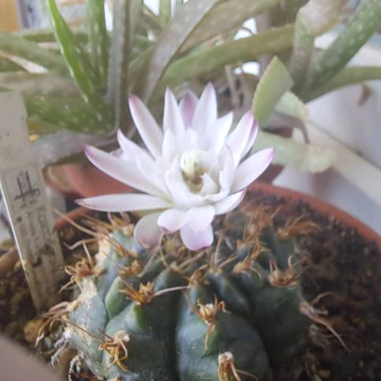
Gymnocalycium damsii
Gymnocalycium damsii ssp. evae var. centrispinus
Pflegehinweise & Notizen:
Sowohl warme als auch kalte Überwinterung möglich. Sommer- & Winterquartier: Nordfenster / Südfenster / Balkon-Fensterbank. Substrat: Uhlig Kakteenerde Standard.
- 09.10.24: Blütenansatz gesichtet
- 24.05.25: Auf Balkon-Fensterbank platziert
- 01.05.25: Knospen leider vertrocknet
- 22.06.25: Neuer Blütenansatz
- 13.07.25: Blüte erfolgreich geöffnet
- 20.09.25: Bildet eine weitere Blüte
- 23.05.23: Hat die Überwinterung im Freiland nicht überstanden
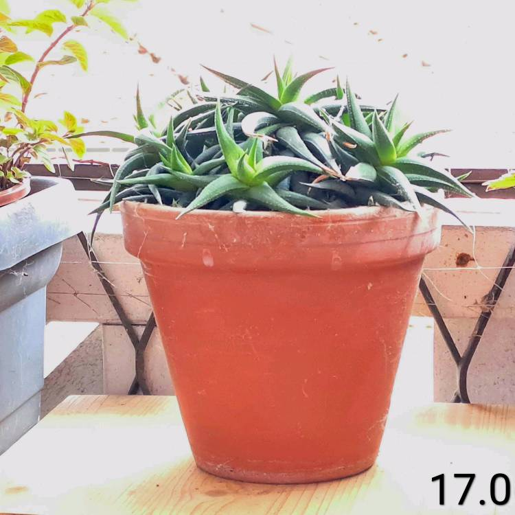
Haworthia
Haworthia radula (?)
Pflegehinweise & Notizen:
Standplatz ganzjährig am Südfenster. Substrat: Uhlig Kakteenerde Standard ggf. gemischt mit COMPO CACTEA® und rein mineralischem Substrat 1:1:1 (Düngen nach 8 Wochen).
- 05.10.24: Knospenbildung beobachtet

Huernia bayeri
Huernia bayeri
Pflegehinweise & Notizen:
Herkunft von www.kakteen-niess.at. Standplatz ganzjährig am Südfenster. Substrat: Rein mineralisches Substrat mit etwas COMPO CACTEA® (bis zu 1:1) bzw. mineralisches Substrat mit sehr wenig organischem Anteil.
- 23.05.25: Bestellt
- 31.05.25: Eingetopft in mineralisches Substrat
- 01.06.25: Foto dokumentiert
- 03.06.25: Vorsichtig angießen

Huernia pillansii
Huernia pillansii
Pflegehinweise & Notizen:
Herkunft von astrophytumland.com. Pflanzen lagen nach Ankunft kurz offen. Standplatz ganzjährig am Südfenster. Substrat: Rein mineralisches Substrat mit etwas COMPO CACTEA® (bis zu 1:1).
- 23.05.25: Bestellt
- 28.05.25: Versendet
- 02.06.25: Angekommen
- 05.06.25: Eintopfen in rein mineralisches Substrat
- 08.06.25: Angießen

Kalanchoe Ableger
Kalanchoe beharensis
Pflegehinweise & Notizen:
Aus Vereinzelung der K. beharensis-Gruppe gezogen. Haltung erfordert warme Überwinterung. Standplatz ganzjährig am Südfenster. Substrat: Uhlig Kakteenerde Standard ggf. gemischt mit COMPO CACTEA® und rein mineralischem Substrat 1:1:1 (Düngen nach 8 Wochen). Ggf. zweischichtiges Befüllen: Mixerde unten, Mineralsubstrat oben.
- 31.05.25: Teilbewurzelte Ableger separiert und eingetopft
- 01.06.25: Foto gemacht
- 03.06.25: Gießen
- 17.06.25: Ans Südfenster gestellt

Kalanchoe Gruppe
Kalanchoe beharensis
Pflegehinweise & Notizen:
Warme Überwinterung zwingend nötig. Standplatz ganzjährig am Südfenster. Substrat: Uhlig Kakteenerde Standard ggf. gemischt mit COMPO CACTEA® und rein mineralischem Substrat 1:1:1 (Düngen nach 8 Wochen).
- 31.05.25: Gruppe vereinzelt: Kopfsteckling geschnitten, Ableger separiert

Kalanchoe Solitär
Kalanchoe beharensis
Pflegehinweise & Notizen:
Als Kopfsteckling gezogen. Warme Überwinterung erforderlich. Standplatz ganzjährig am Südfenster. Substrat: Uhlig Kakteenerde Standard ggf. gemischt mit COMPO CACTEA® und rein mineralischem Substrat 1:1:1 (Düngen nach 8 Wochen).
- 07.10.24: Kopfsteckling geschnitten
- 24.10.24: In Topf gesetzt
- 10.05.25: Ans Südfenster gestellt
- 22.06.25: Foto dokumentiert

Kalanchoe Steckling
Kalanchoe beharensis
Pflegehinweise & Notizen:
Aus Vereinzelung der Gruppe. Schnittfläche wurde sorgfältig mit Aktivkohle behandelt. Warme Überwinterung nötig. Standplatz ganzjährig am Südfenster. Substrat: Uhlig Kakteenerde Standard ggf. gemischt mit COMPO CACTEA® und rein mineralischem Substrat 1:1:1 (Düngen nach 8 Wochen).
- 31.05.25: Kopfsteckling geschnitten und behandelt
- 01.06.25: Foto gemacht
- 05.06.25: In rein mineralisches Substrat eingetopft
- 12.06.25: Erste Wassergabe (Angießen)

Lobivia
Lobivia winteriana
Pflegehinweise & Notizen:
Herkunft von astrophytumland.com. Mit offener Blüte geliefert. Standplatz ganzjährig auf der Balkon-Fensterbank. Substrat: Uhlig Kakteenerde Standard ODER bei geplanter Überwinterung im Freiland eine Mischung aus 1 Teil Uhlig Standarderde + 1 Teil COMPO CACTEA® + 1 Teil Uhlig rein mineralischem Substrat. Düngen nach 8 Wochen nötig.
- 23.05.25: Bestellt
- 28.05.25: Versendet
- 02.06.25: Angekommen, direkt in Standarderde eingetopft
- 05.06.25: Vorsichtig angießen
- 21.06.36: Erneute Blüte dokumentiert

Lophophora koehresii
Lophophora koehresii
Pflegehinweise & Notizen:
Herkunft von www.kakteen-niess.at. Lieferung erfolgte bereits mit sichtbarer Blütenknospe. Sommerquartier: Südfenster, Winterquartier: Treppenhaus. Substrat: Rein mineralisches Substrat, evtl. versetzt mit maximal 10% COMPO CACTEA®.
- 23.05.25: Bestellt
- 31.05.25: Geliefert und eingetopft in mineralisches Substrat
- 01.06.25: Foto gemacht
- 03.06.25: Erste vorsichtige Wassergabe
- 12.06.25: Blüte erfolgreich geöffnet
- 30.09.25: In das Winterquartier (Treppenhaus) geräumt

Lophophora wiliamsii, Peyotl
Lophophora wiliamsii
Pflegehinweise & Notizen:
Erworben in Berlin. Sommerquartier am Südfenster, zur Überwinterung ins Treppenhaus stellen. Substrat: Rein mineralisches Substrat, evtl. gemischt mit ca. 10% COMPO CACTEA®.
- 08.10.24: Ins Treppenhaus gestellt
- 13.04.25: Ans Südfenster umgezogen
- 13.05.25: Erste Anzeichen von Blütenbildung
- 29.05.25: Blüte öffnet sich, geht jedoch nicht ganz auf
- 31.05.25: Blüte verblüht
- 29.09.25: Zur Überwinterung wieder ins Treppenhaus geräumt

○ Mammillaria baumii
Pflegehinweise & Notizen:
Herkunft von Kakteen Niess.
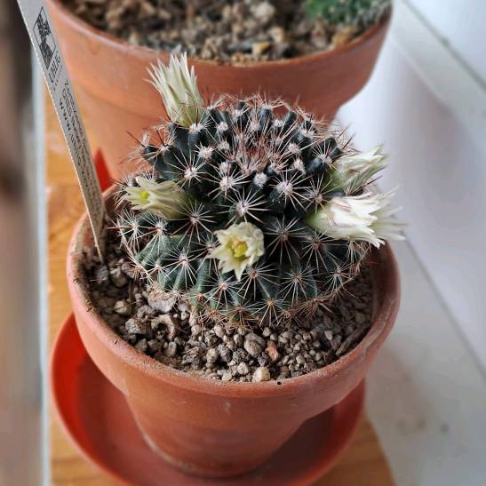
Mammillaria gaumeri
Mammilaria gaumeri
Pflegehinweise & Notizen:
Herkunft von Kakteen Uhlig. Absolut trockene Winterruhe einhalten. Sommerquartier: Balkon-Fensterbank oder Westfenster, Winterquartier: Treppenhaus. Substrat: Uhlig Kakteenerde Standard ggf. gemischt mit COMPO CACTEA® im Verhältnis 1:1 (Nachdüngen nach 8 Wochen).
- 15.04.25: Sommerfrische Balkon
- 20.05.25: Umtopfen in reine Uhlig Kakteenerde Standard
- 15.06.25: Blütenansatz entdeckt
- 11.07.25: Gießrand muss vergrößert werden
- 29.09.25: Zur Überwinterung ins Treppenhaus gestellt
- 28.05.26: An das Westfenster gestellt

Mammillaria longimamma
Mammillaria longimamma
Pflegehinweise & Notizen:
Herkunft von astrophytumland.com. Pflanzen lagen nach Ankunft offen. Absolut trockene Winterruhe einhalten. Sommerquartier: Balkon-Fensterbank oder Küchenfenster, Winterquartier: Treppenhaus. Substrat: Uhlig Kakteenerde Standard ggf. gemischt mit COMPO CACTEA® im Verhältnis 1:1 (Nachdüngen nach 8 Wochen).
- 23.05.25: Bestellt
- 28.05.25: Versendet
- 02.06.25: Angekommen
- 05.06.25: Eingetopft in Standarderde
- 08.06.25: Erstes Angießen
- 29.09.25: Ins Treppenhaus geräumt
- 28.05.26: An das Westfenster gestellt

○ Mammillaria rubograndis
Mammillaria rubograndis
Pflegehinweise & Notizen:
Keine spezifischen Pflegehinweise hinterlegt.

Mammillaria senilis
Mammillaria senilis
Pflegehinweise & Notizen:
Herkunft von astrophytumland.com. Pflanzen lagen nach Ankunft offen. Absolut trockene Winterruhe einhalten. Sommerquartier: Balkon oder Balkon-Fensterbank, Winterquartier: Balkon-Fensterbank. Substrat: Uhlig Mix Erde (Nachdüngen nach 8 Wochen).
- 23.05.25: Bestellt
- 28.05.25: Versendet
- 02.06.25: Angekommen
- 05.06.25: Eintopfen abgeschlossen
- 08.06.25: Angießen

Melokaktus
Melocactus pachyacanthus
Pflegehinweise & Notizen:
Standplatz ganzjährig fest am Südfenster. Regenschutz ist zwingend nötig; keine klassische Sommerfrische im Freien durchführen. Substrat: Uhlig Kakteenerde Standard ggf. gemischt mit COMPO CACTEA® und rein mineralischem Substrat 1:1:1 (Düngen nach 8 Wochen).

Notocactus
Notocactus ottonis
Pflegehinweise & Notizen:
Sowohl warme als auch kalte Überwinterung möglich. Standplatz ganzjährig auf der Balkon-Fensterbank. Substrat: Uhlig Kakteenerde Standard.
- 24.05.25: Bei eBay bestellt
- 28.05.25: Geliefert und eingetopft
- 29.05.25: Foto gemacht
- 31.05.25: Erste Wassergabe (Angießen) sowie vermuteter Knospenansatz
- 02.07.25: Bildet deutlich sichtbare Kindel aus
- 23.07.25: Gedüngt

Rhipsalidopsis
Rhipsalidopsis-Hybride 'Thor Hope'
Pflegehinweise & Notizen:
Klassischer "Osterkaktus". Geliefert von Uhlig Kakteen. Substrat: Uhlig Epi Erde pur oder gemischt mit COMPO CACTEA® im Verhältnis 2:1 (Epi Erde : COMPO CACTEA®). Erstes Düngen nach 6 Wochen.
- 10.05.25: Bestellt bei Uhlig
- 17.05.25: Angekommen

○ Schlumbergera "Salvador Brazil"
Pflegehinweise & Notizen:
Keine spezifischen Pflegehinweise hinterlegt.

Sedum
Sedum nussbaumerianum
Pflegehinweise & Notizen:
Klassische Fetthenne. Warme oder kalte Überwinterung möglich. Sommerquartier: Balkon, Winterquartier: Südfenster. Substrat: Uhlig Kakteenerde Standard ggf. gemischt mit COMPO CACTEA® und rein mineralischem Substrat 1:1:1 (Düngen nach 8 Wochen).
- 10.05.25: Sommerfrische Balkon
- 30.09.25: Ende Sommerfrische
- 28.05.26: Auf den Balkon gestellt